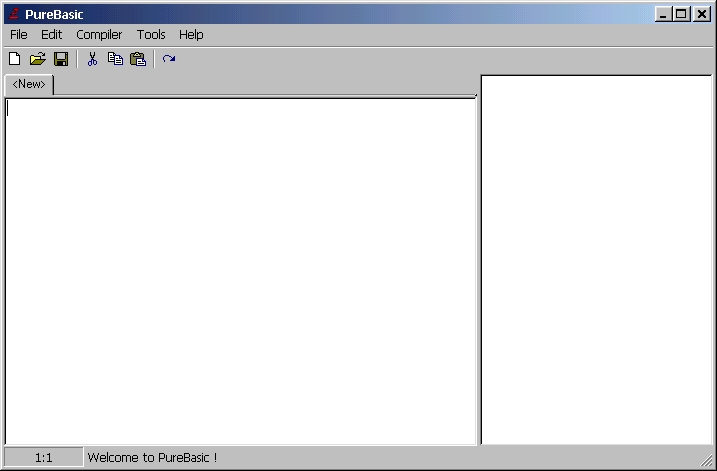

Wenn Sie PureBasic schon installiert haben und einfach ein Update installieren wollen, dann müssen Sie das Update von der PureBasic Webseite (http://www.purebasic.com) herunterladen und den Inhalt des Updates entpacken, da es normalerweise in Form eines Archivs vorliegen wird. Sie können dann das "UpdateTool" starten, um Ihre Version von PureBasic zu aktualisieren. Sie müssen im "UpdateTool" angeben, wo sich die PureBasic-Dateien auf Ihrer Festplatte befinden und welche Sprache Sie verwenden wollen.
Wenn Sie PureBasic jemals deinstallieren müssen, können Sie den Ordner einfach löschen, da keine zusätzlichen Daten an "spezielle" Stellen auf Ihrem System (zum Beispiel in die Registry von Windows) geschrieben werden.
Dies ist die integrierte Entwicklungsumgebung (IDE), welche mit PureBasic geliefert wird und Ihnen das Eingeben, Editieren und Starten von Programmen sowie die volle Kontrolle des Compilers auf einer graphischen Oberfläche ermöglicht. Wenn Sie sich "abenteuerlustiger" fühlen, dann ist der PureBasic Compiler tatsächlich ein vom Editor unabhängiges externes Programm, so dass Sie den Editor Ihrer eigenen Wahl verwenden können. Dies geht jedoch über den Umfang des Benutzerhandbuchs hinaus - wir empfehlen Ihnen, dass Sie sich zunächst an den PureBasic Editor halten. Wenn Sie den Editor starten, dann sehen Sie ein Fenster, das in etwa wie dieses aussieht:

| Vorheriges Thema | Kapitel-Inhalt | Nächstes Thema |
|---|---|---|
| Wie Sie PureBasic erhalten | Benutzerhandbuch Inhalt | Benutzung des Editors |